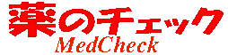
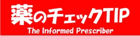

お知らせ
NPOJIPからのお知らせです。
薬のチェック 
「薬のチェックは命のチェック」と「正しい治療と薬の情報」TIP（The Informed Prescriber)を前身とし、2015年1月から薬のチェックTIPとしておりましたが、2019年からは、「薬のチェック」と名称を改めました。
薬のチェックは、前身の2誌および薬のチェックTIPと同様、製薬企業や行政の援助を一切受けず、広告もなく、購読料によって支えられているため、製薬企業や国に遠慮することなく、 中立の立場から薬剤を評価して本当の情報を載せることができます。
薬のチェックTIP  2015年1月誕生
「薬のチェックは命のチェック」と「正しい治療と薬の情報」TIP（The Informed Prescriber)を前身とし、2015年1月に生まれ変わりました。 あふれるような情報がありながら、「信頼できる情報が少ない」「何を信頼すればよいのか？」 そのような疑問をお持ちの方に必須の情報です。 薬のチェックTIPは、前身の2誌同様、製薬企業や行政の援助を一切受けず、広告もなく、購読料によって支えられているため、製薬企業や国に遠慮することなく、 中立の立場から薬剤を評価して本当の情報を載せ事がることができるからです。
ぜひ、私たちの情報を、日常の診療に、また各人の健康に役立ててください。みなさんに購読していただくことで、 私たちのよりよい調査・分析・情報誌作りが可能となります。よろしくお願いします。2015年1月
（なお、薬のチェックTIP2015年1月の第１号は、「 TIP誌」として通算30巻、「薬のチェックは命のチェック誌として通算15巻57号、となります）
新住所と連絡先
住所
〒543-0002
大阪市天王寺区上汐５丁目１−２０−７０２
連絡先
郵便物は、大阪市天王寺郵便局私書箱第４号 へ
Tel 06-6771-6345(rokusan-shigoto)
Fax 06-6771-6347(rokusan-yonabe)
メールはこちらからどうぞ。
NPO法人医薬ビジランスセンター(NPOJIP)は
を通称とするとともに、ホームページをリニューアルしました。
２００６年２月２６日に開催した社員総会において、NPO法人医薬ビジランスセンターの略称NPOJIP（従来どおり）に加えて、通称として「薬のチェック」を用いることが決定しました。
医薬ビジランスとは、pharmacovigilance（医薬品の監視）の意味です。医薬関係者には知られてきましたが、まだまだ一般にはなじみがありません。出版している情報誌の名前から、「薬のチェック」と呼んでいただくことにしました。今後ともよろしくお願いいたします。